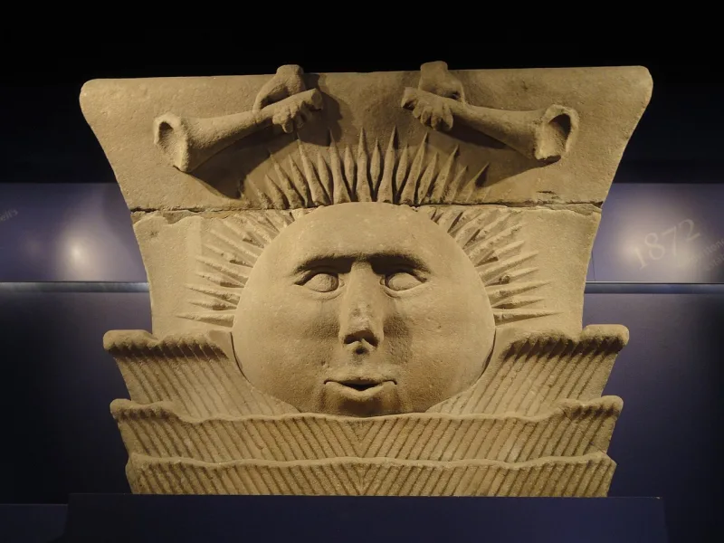

God never changes, yet once was a man
UnrefutedNo good counter-argument has been published by LDS scholars.
The evidence
What the Book of Mormon says
Moroni 8:18 — God is "unchangeable from all eternity to all eternity." That matches the Bible: Psalm 90:2, Malachi 3:6, and Isaiah 43:10, where God says "before me there was no God formed."
What Joseph Smith preached in 1844
In 1844 he preached at a funeral for a man named King Follett. He taught that God "was once as we are now" — a man who rose to become God.
And that we may do the same.
Their answer, at full strength
Blake Ostler and FAIR argue Moroni 8:18 is about God's character — he is not fickle or partial — rather than his history. The surrounding verses are about God's fairness to children, which supports that reading.
How strong is this argument?
Strong for you. The character reading is fair for Moroni 8:18 on its own.
It does not help with Isaiah 43:10, which is about existence, not temperament.
What to say
"Read me Isaiah 43:10. Was there ever a God before this one?"


How they answer this — at its strongest
That verse is about God's character, not his past, and the ones around it fit that.
Three replies. Blake Ostler and FAIR argue that Moroni 8:18 is about God's moral character. He is not partial or fickle. It is not about his history. The verses around it concern God's fairness to children, so reading a claim about his being into it is proof-texting.
Second, 'from all eternity to all eternity' can be a Hebrew way of saying throughout all the ages of this creation. That fits a being who always existed and was exalted before this creation began.
Third, since attaining godhood he is unchanging in everything that bears on salvation. That is all Mormon 9 needs for its argument about miracles.
The verdict
Strong for you: the Book of Mormon here sides with the Bible against later Mormon teaching.
The character-only reading is hard to sustain. Moroni 8:18 and Mormon 9:9 use the language of time and being. It is the same formula the Bible uses of God in Psalm 90:2.
The Book of Mormon nowhere hints that God was once a mortal man. And the King Follett sermon frames the 1844 teaching as overturning the older view. That older view is exactly what the 1829 text holds.
The idiom-and-cycles reply is speculative and comes after the fact. No Latter-day Saint scripture supports it. Here the Book of Mormon sides with the Bible against later Mormonism, and that has not been answered.
Sources
- Institute for Religious Research, 'The Mormon God Has Not Always Been God'
- Robert M. Bowman Jr., 'Answers to Mormon Answers on Moroni 8:18'
- Richard Packham, 'Major Contradictions in Mormonism'